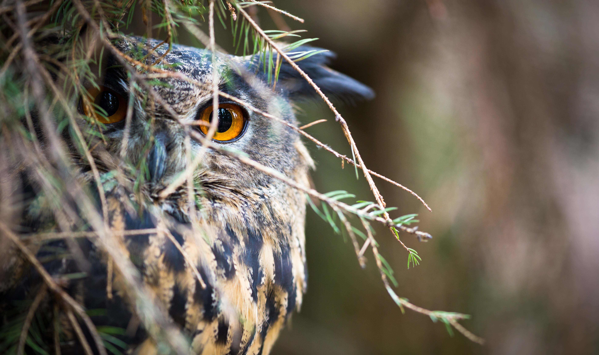

Sigilosos y cazadores, los búhos de Chile se alimentan de roedores, reptiles, anfibios y otras aves, que les permite ayudar a controlar las poblaciones de otras especies. Es por esta razón que se les considera controladores de plagas. En Chile actualmente habitan siete especies. En esta ocasión, nombraré a 3 de ellas; El tucúquere (bubo magellanicus); el pequén (Athene cunicularia), que tiene 2 subespecies; una de ellas es el chuncho austral (Glacidum nana). Y finalmente, el Concón (Strix rufipes).
